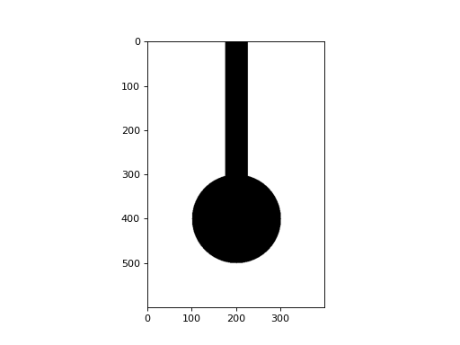
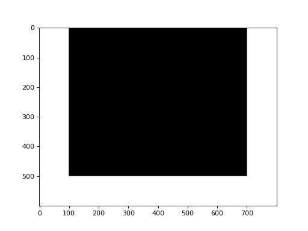
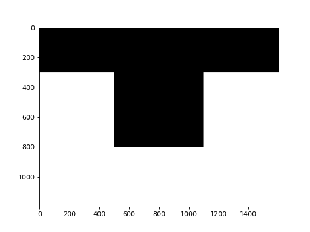
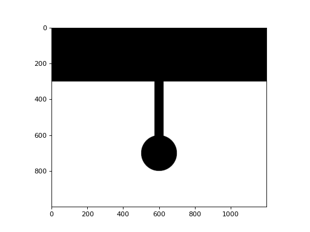

imgconstruct
Module to construct the artificial image of the substrate.
- class dipcoatsubstrate.imgconstruct.ROICircSubstrate(shape: Tuple[int, int], r: int, l: int, w: int)
ROI image containing the circular substrate.
- Parameters
- shape
(height, width) of the ROI.
- r
Radius of the circular part.
- l, w
Length and width of the branch part.
Examples
>>> import matplotlib.pyplot as plt >>> from dipcoatsubstrate.imgconstruct import ROICircSubstrate >>> subst = ROICircSubstrate((600, 400), 100, 400, 50) >>> plt.imshow(subst.image)
(Source code, png, hires.png, pdf)
 - Attributes
- rint
Radius of the circular part.
- l, wint
Length and width of the branch part.
- property image
Return the image of ROI with substrate drawn.
{kind=link}
{kind=link}
- class dipcoatsubstrate.imgconstruct.ROIRectSubstrate(shape: Tuple[int, int], substshape: Tuple[int, int])
ROI image containing the rectangular substrate.
- Parameters
- shape
(height, width) of the ROI.
- substshape
(height, width) of the substrate.
Examples
>>> import matplotlib.pyplot as plt >>> from dipcoatsubstrate.imgconstruct import ROIRectSubstrate >>> subst = ROIRectSubstrate((600, 800), (500, 600)) >>> plt.imshow(subst.image)
(Source code, png, hires.png, pdf)
 - Attributes
- substshapetuple
(height, width) of the substrate.
- property image
Return the image of ROI with substrate drawn.
{kind=link}
{kind=link}
- class dipcoatsubstrate.imgconstruct.ROISubstrate(shape: Tuple[int, int])
Abstract base class for ROI image containing the substrate.
Subclass must define
image()property, andrandom()method.- Parameters
- shape
(height, width) of the ROI.
- Attributes
- shapetuple
(height, width) of the ROI.
- blank_imagenp.ndarray
Image of the blank ROI without substrate.
- abstract property image: numpy.ndarray
Return the image of ROI with substrate drawn.
- abstract classmethod random(shape: Tuple[int, int], seed: Optional[int] = None)
Return the randomized instance.
- Parameters
- shape
Shape of the full image.
- seed
Randomizing seed.
- Returns
- ROISubstrate
- dipcoatsubstrate.imgconstruct.imgconstruct(imgshape: Tuple[int, int], substrate: dipcoatsubstrate.imgconstruct.ROISubstrate, roipt: Tuple[int, int]) numpy.ndarray
Constructs the artificial image of the substrate.
Warning
This function is not fully implemented yet.
- Parameters
- imgshape
(height, width) of the image.
- substrate
ROI image containing the substrate.
- roipt
(x, y) coordinates of top left point of the ROI.
Examples
>>> import matplotlib.pyplot as plt >>> from dipcoatsubstrate.imgconstruct import (imgconstruct, ... ROIRectSubstrate) >>> subst = ROIRectSubstrate((600, 800), (500, 600)) >>> img = imgconstruct((1200, 1600), subst, (300, 400)) >>> plt.imshow(img)
(Source code, png, hires.png, pdf)
 >>> from dipcoatsubstrate.imgconstruct import ROICircSubstrate >>> subst = ROICircSubstrate((600, 400), 100, 400, 50) >>> img = imgconstruct((1000, 1200), subst, (300, 400)) >>> plt.imshow(img)
(Source code, png, hires.png, pdf)

{kind=link}
{kind=link}
{kind=link}
{kind=link}